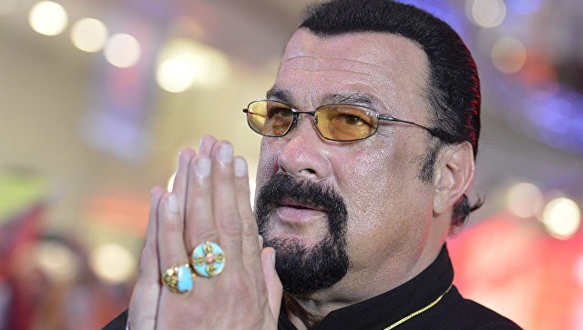

Москва,3 окт-РИА Новости. Бывший боксер-тяжеловес Джордж Форман через свой Twitter вызвал на поединок актера Стивена Сигала.
"Стивен Сигал, я бросаю тебе вызов, один на один. Я буду использовать бокс, ты можешь использовать что угодно. Десять раундов в Вегасе", — написал он. Твит 68-летнего боксера собрал более 20 тысяч лайков, им поделились почти девять тысяч пользователей.
Сигалу 65 лет, он является мастером боевых искусств, имеет седьмой дан айкидо. Твит Формана актер пока никак не прокомментировал.
Форман в 1994 году стал старейшим боксером, завоевавшим титулы чемпиона мира по версиям WBC и IBF.
РИА Новости https://ria.ru/sport/20171003/1506055719.html